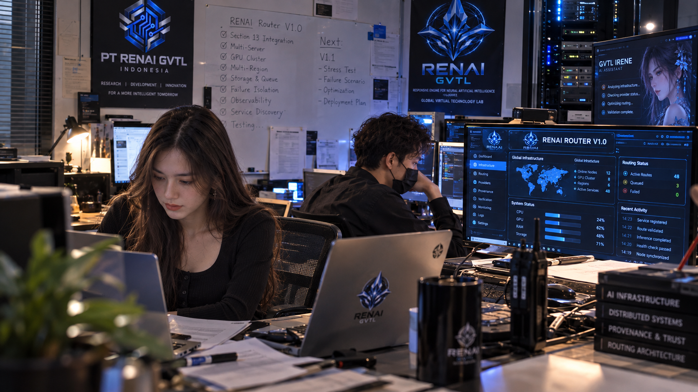

RENAI Router Mencapai V1.0 Setelah Integrasi Penuh Infrastruktur Section 13
MAJALENGKA, 29 September 2026 — Pengembangan RENAI Router kembali mencapai sebuah tahapan baru setelah PT RENAI GVTL Indonesia menyelesaikan konsolidasi arsitektur infrastruktur ke dalam RENAI Router V1.0.
Versi ini menjadi baseline engineering terpadu yang menggabungkan fondasi Router sebelumnya dengan seluruh kemampuan infrastruktur yang dikembangkan melalui Section 13.

Dari Prototype Bertahap Menjadi Satu Baseline
Perjalanan RENAI Router tidak dibangun dalam satu langkah.
Pengembangannya dilakukan secara bertahap melalui sejumlah milestone, mulai dari processing gateway, output binding, integrity, controlled verification, provenance, security, provider integration, hingga berbagai kemampuan infrastruktur.
Integrasi Section 13
Dalam perkembangan terakhir, Section 13 secara bertahap memperluas kemampuan Router melalui berbagai komponen infrastruktur:
- Multi-Server Architecture
- Internal Infrastructure Boundary
- Cloud + Hybrid Deployment Capability
- GPU-Cluster Integration
- Multi-Region & Regional Failover
- Capacity-Aware Distribution
- Distributed Storage & Queueing
- Failure Isolation & Blast-Radius Control
- Observability & Infrastructure Telemetry
- Service Discovery & Dynamic Registration
Seluruh kemampuan tersebut kini dikonsolidasikan dalam RENAI Router V1.0.
Satu Arsitektur, Banyak Lapisan
Dalam baseline V1.0, alur utama Router mencakup proses dari identity dan authorization, classification serta egress policy, task dan capability analysis, eligibility dan selection, processing gateway, provider adapter, output validation, metadata dan transformation policy, fingerprint dan integrity, provenance, controlled verification, hingga finalization dan release gate.
Dengan demikian, kemampuan infrastruktur baru tidak berdiri sendiri. Seluruhnya tetap berada di bawah kontrol arsitektur Router.
Zero Trust Tetap Menjadi Fondasi
Integrasi infrastruktur tidak mengubah prinsip keamanan yang telah dibangun sebelumnya.
Zero Trust tetap menjadi otoritas lintas sistem.
Kemampuan seperti service discovery, GPU cluster, multi-region, storage, queue, dan infrastructure telemetry tidak secara otomatis memberikan kepercayaan kepada sebuah komponen.
Authorization, classification, egress policy, provider eligibility, provenance, lifecycle, release gate, dan fail-closed behavior tetap menjadi bagian dari kontrol Router.
Discovery is not Trust.
Menemukan sebuah service tidak berarti Router langsung mempercayainya.
V1.0 Sebagai Engineering Baseline
RENAI Router V1.0 ditetapkan sebagai consolidated executable engineering baseline.
Artinya, V1.0 menyatukan hasil evolusi prototype sebelumnya ke dalam satu baseline yang lebih terstruktur dan dapat digunakan sebagai dasar pengembangan berikutnya.
Namun, V1.0 bukan klaim bahwa sebuah deployment fisik tertentu telah production-certified.
Deployment nyata masih membutuhkan infrastruktur, credentials, provider agreements, topology, operational targets, serta pengujian produksi yang sesuai dengan lingkungan implementasinya.
Satu Langkah Baru dalam Evolusi RENAI Router
Dengan tercapainya V1.0, evolusi RENAI Router kini memiliki jalur pengembangan yang lebih jelas.
Prototype Evolution
↓
Infrastructure Expansion
↓
Section 13 Integration
↓
Full Validation
↓
RENAI Router V1.0
↓
Next Engineering Phase
V1.0 bukan akhir dari pengembangan RENAI Router.
Sebaliknya, versi ini menjadi baseline baru untuk tahap berikutnya, ketika fokus dapat bergeser dari sekadar menambahkan kemampuan menuju integrasi yang lebih dalam, hardening, eksperimen failure scenario, dan pengujian pada lingkungan yang semakin kompleks.
Tentang PT RENAI GVTL Indonesia
PT RENAI GVTL Indonesia merupakan perusahaan teknologi yang berfokus pada penelitian dan pengembangan kecerdasan buatan, infrastruktur AI, serta teknologi pendukung ekosistem digital. Berbasis di Majalengka, Jawa Barat, Indonesia, perusahaan saat ini berada dalam fase “The Foundation Era”, dengan fokus pada pembangunan fondasi teknologi, penelitian, pengembangan model, infrastruktur komputasi, serta arsitektur sistem yang dapat dikembangkan menuju skala global.
Pernyataan Status Teknologi
RENAI Router V1.0 is an engineering baseline, not a production certification.
Seluruh deployment nyata tetap membutuhkan infrastruktur, credentials, provider agreements, topology, operational targets, serta pengujian produksi yang sesuai dengan lingkungan implementasinya.